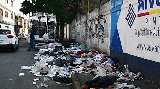

"informacion y situacion actual"
Autor: Silvia 27 de Mayo 2026
Azcapotzalco es una alcaldía clave en la zona norte de la Ciudad de México, con una larga tradición industrial y una densidad poblacional superior a los 430 mil habitantes. Su historia está marcada por la antigua refinería “18 de Marzo”, que operó durante décadas y dejó una huella ambiental profunda, además de cientos de talleres, fábricas y zonas de intenso tránsito. Su suelo, formado por antiguos lagos, favorece la filtración de sustancias, y cuenta con pocas áreas verdes para compensar la acumulación de agentes contaminantes.
Hoy forma parte de las zonas con mayor monitoreo ambiental, donde frecuentemente se superan los límites seguros de partículas finas y ozono. Se registra contaminación en aire, agua y suelo, afectando principalmente colonias cercanas a vialidades grandes y zonas industriales. Las condiciones climáticas y geográficas del Valle de México hacen que los contaminantes se queden estancados, empeorando la calidad ambiental durante gran parte del año